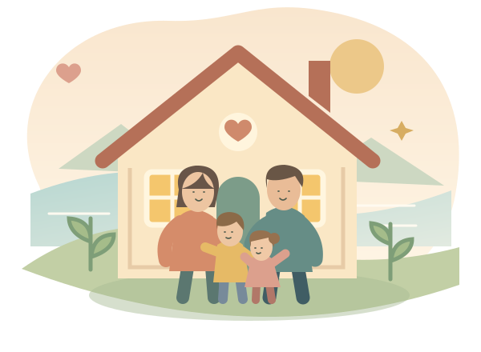

UNSER KLEINES STÜCK SICHERHEIT
Weil wir füreinander
da sind.
Ein warmer Platz, etwas Gutes zu essen und das Wissen:
Wir haben aneinander gedacht.
Unser Vorrat für Moni, Sophi, Felix und Thomas.
Mit kleinen Schritten sorgen wir gemeinsam vor.
♡ Für uns vier14 Tage gut versorgtUnser Zuhause am Bodensee
Unseren Vorrat ansehen ↓
♡ Das Wichtigste haben wir: einander.
♡
Vorsorge darf sich gut anfühlen.
Es muss nicht alles auf einmal sein.
Wir ergänzen, was fehlt – ganz in unserem Tempo.
Trinkwasser3 Liter pro Person und Tag
Vollständig vorhandenSchon für uns vorbereitet
Unsere nächsten SchritteDas können wir noch ergänzen
KLEINE SCHRITTE. EIN GUTES GEFÜHL.
Alles im Überblick
Trage ein, was da ist. Ab der Sollmenge erscheint das Häkchen automatisch. Aufgaben kannst du direkt abhaken.